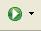
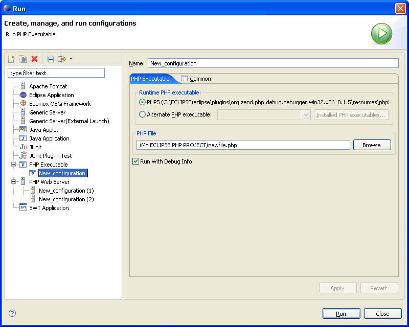

This section describes running and debugging PHP scripts when using the PDT.
You can initiate a Run of a PHP script in several different ways. In all cases, the difference is only in the specific location that the run is initiated.
To Initiate a Run
Click on the Run icon (). The current script will run; -or-
Click on the Run icon's drop down arrow. Select:
Run As > Run on Server; - or -
Run As > PHP Executable; - or -
Run As > PHP Web Server
Click on the Run Menu item. This will open a drop down menu. Select::
Run Last Launched; - or -
Run; -or-
Run As > Run on Server; - or -
Run As > PHP Executable; - or -
Run As > PHP Web Server
Right click on an open PHP Editor. This will open a drop down menu. Select::
Run As > Run on Server; - or -
Run As > PHP Executable; - or -
Run As > PHP Web Server
Right click on a PHP file element in the PHP Explorer or in the Navigator. This will open a drop down menu. Select:
Run As > Run on Server; - or -
Run As > PHP Executable; - or -
Run As > PHP Web Server
Right click on the left Annotation bar of a PHP script. This will open a drop down menu. Select::
Run As > Run on Server; - or -
Run As > PHP Executable; - or -
Run As > PHP Web Server
Run output is displayed in the following views:
Debug Output
Browser Output
Each PHP script must be configured in order to run.
To open the Configuration dialog, open the option Run As > Run from any of the above starting points. The Configuration dialog will open.

Configuring Runs